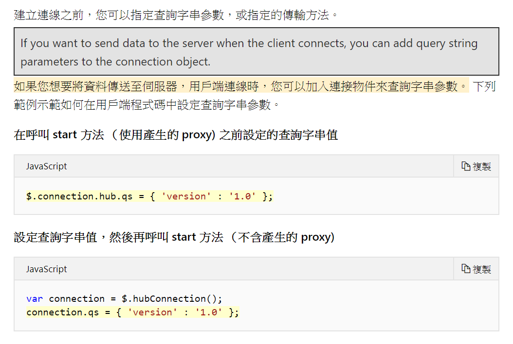
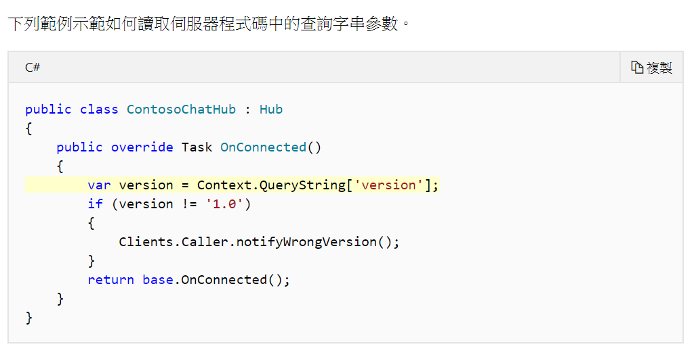
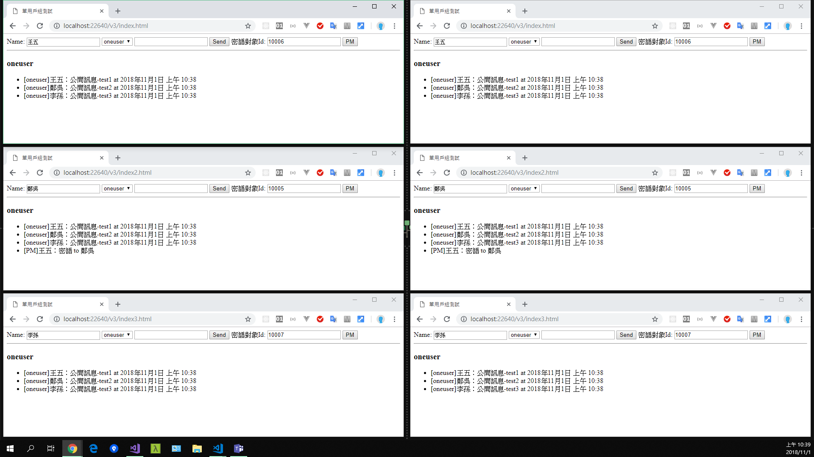
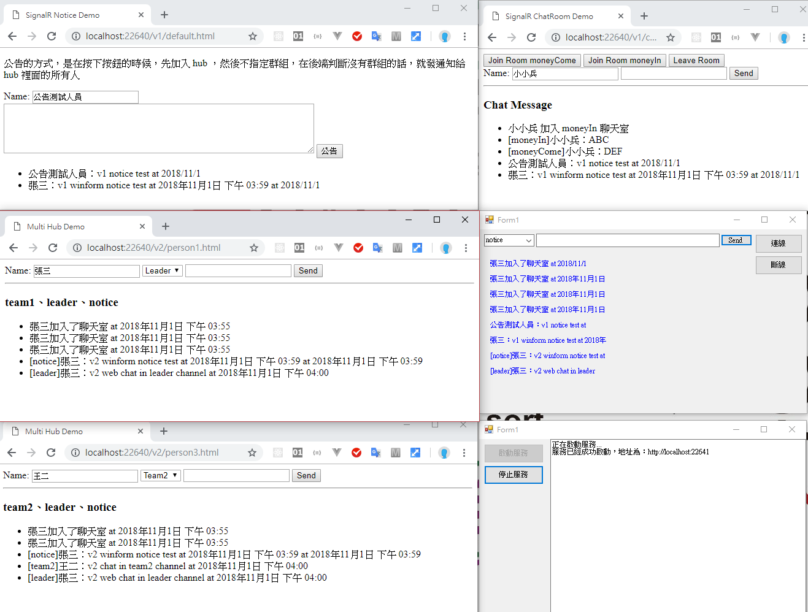

接續先前的練習，持續調整為 single-user-group 及多個 Hub
在 website 的環境下，同一個使用者可以開啟多個網頁，那如何針對同一個使用者的瀏覽器發送訊息呢？官方 有給出幾種方法及範例，優缺點也有列出，這邊採用的是單一用戶組的方式
Single-User Groups 在官方的範例是透過群組做到這一點，但是如果網站並沒有實作 Identity，透過Context.User.Identity.Name抓到的應該會是空字串，所以問題又變成了如何辨識使用者連線，既然是網頁，那只要從前端傳遞該使用者的 PKey 就可以了
如何辨識使用者連線？


如此一來就可以透過 MVC 後端讀取使用者資訊，並在 Web 頁面與 SignalR 連線之前，將資料透過下列的方式塞入 QueryString，並可由後端取得資訊，應可利用 QueryString 來區分使用者的組別，然後在送出訊息的時候判斷組別，並在該組別發言
1 2 3 4 5 6 7 8 9 10 11 12 13 14 15 16 17 18 19 20 21 [HubName("oneuser" ) ] public class OneUserHub : Microsoft.AspNet.SignalR.Hub { public override Task OnConnected ( var id = Context.QueryString["id" ]; Groups.Add(Context.ConnectionId, id); return base .OnConnected(); } public void SendPrivateMsg (string userId, string msg Clients.Group(userId).Received(msg); } public void Send (string msg Clients.All.Received($"{msg} at {DateTime.Now:f} " ); } }

將 SignalR 服務從網站拆出來 之前練習的時候是透過網站直接安裝套件並建立服務，為了更好的模擬實務情境，網站應該是與 SignalR 切開來的會比較洽當，參考這篇 實作，以及這篇 解決 CORS 問題
備註：之後實際上線發現，實務上還是直接掛在網站上使用，並沒有另外拆出來，這邊就存查看看就好了
新增一個 WinForm 專案，並安裝 nuget 套件Microsoft.Owin.SelfHost、Microsoft.AspNet.SignalR.SelfHost，並加入 OWin Startup 類別，服務建立在另外一個 port，所以也要針對 Owin Startup 來做一些修改，避過前端 CORS 的問題，所以也要安裝Microsoft.Owin.Cors
1 2 3 4 5 6 7 8 9 10 11 12 13 14 15 16 17 18 19 20 21 22 using Microsoft.AspNet.SignalR;using Microsoft.Owin;using Microsoft.Owin.Cors;using Owin;[assembly: OwinStartup(typeof(SignalRService.Startup)) ] namespace SignalRService { public class Startup { public void Configuration (IAppBuilder app ) app.Map("/signalr" , map => { map.UseCors(CorsOptions.AllowAll); var hubConfiguration = new HubConfiguration { }; map.RunSignalR(hubConfiguration); }); } } }
另外在 Client 端透過 javascript 連線的時候，必須要先指定連線路徑
1 $.connection.hub.url = "http://localhost:22641/signalr" ;
同時在 HTML 內原先載入的 signalr/hub 也要改成服務的路徑
1 <script src ="http://localhost:22641/signalr/hubs" > </script >
先前 winform 的實作方式並不是像 javascript client 那樣建立事件給 server 端的 hub 呼叫，而是在 winform client 端有接收到資料，就笨笨的去判斷資料是甚麼，然後再去處理，這個方式對於維護是很不便的，所以我們現在要重新改寫一下，將 winform 的部分也像 js client 一樣，寫好事件等 server 呼叫
原先的_conn.Received還有_conn.Closed事件的委派就通通刪掉，取而代之的是一開始就把事件註冊下去給 proxyHub，因為要模擬上次所實作的概念，我也假設 winform 端是有登入的，然後取得使用者資料，再依據使用者的頻道去動態的 create，在一開始就先處理這件事情
1 2 3 4 5 6 7 8 9 10 11 12 13 14 15 16 17 18 19 20 21 22 23 24 25 26 27 28 29 30 31 32 33 34 private CurrectUser GetUser ( return new CurrectUser { Name = "張三" , Channel = new List<ChannelInfo> { new ChannelInfo {Name = "team1" , Id = 0 }, new ChannelInfo {Name = "leader" , Id = 2 }, new ChannelInfo {Name = "notice" , Id = 3 } } }; } private Dictionary<string , IHubProxy> GetUserHubs (IEnumerable<ChannelInfo> channels ) var result = new Dictionary<string , IHubProxy>(); foreach (var info in channels) { result.Add(info.Name,_conn.CreateHubProxy(info.Name)); } result.Add("chathub" , _conn.CreateHubProxy("chathub" )); return result; } internal class ChannelInfo { public string Name { get ; set ; } public int Id { get ; set ; } }
當我們取得了使用者的頻道之後，接著要為這些 hub 註冊事件給 server 呼叫
1 2 3 4 5 6 7 8 9 10 11 12 13 14 15 16 17 18 19 20 21 22 23 24 25 26 27 28 29 30 31 32 33 34 35 _hubs = GetUserHubs(_currectUser.Channel); foreach (var currectHub in _hubs){ currectHub.Value.On<string >("received" , (msg) => { DoUiCallBack(() => { GenerateNewLabel(msg); }); }); } private void GenerateNewLabel (string msg var lb = new Label { Location = new Point(15 , y += 25 ), Text = msg, ForeColor = Color.Blue, Width = 200 }; this .Controls.Add(lb); } private void DoUiCallBack (UiCallBack cb ) if (this .InvokeRequired) { this .Invoke(new UiCallBack( cb.Invoke )); } } private delegate void UiCallBack (
同時，畫面也做一些調整，不過這個練習主要只是做一個簡單的 POC，所以很多地方就沒有再去精細處理了，例如訊息會一直往下長….

連線時取得使用者的唯一識別碼，再將該連線加入至 Group (由登入機制提供給 client，再由 Client 透過 QueryString 傳遞給 SignalR)
1 2 3 4 5 6 7 8 9 10 11 12 13 14 15 16 17 18 public override Task OnConnected ( var id = Context.QueryString["id" ]; Groups.Add(Context.ConnectionId, id); return base .OnConnected(); } public void SendPrivateMsg (string userId, string msg Clients.Group(userId).Received(msg); }
1 2 3 4 5 6 7 $sendPrivateBtn.on("click" , function ( $.connection.notice.server.sendPrivateMsg(userId, `[PM]${data.name} ：${$msgDom.val()} ` ); $msgDom.val("" ); });
1 2 3 4 5 6 7 8 9 10 11 12 var querystringData = new Dictionary<string , string > {{"id" , "10001" }};_conn = new HubConnection(SignalRurl, querystringData); private void btnPM_Click (object sender, EventArgs e _hubs["notice" ].Invoke("sendPrivateMsg" , "10002" , $"[PM-winform]{_currectUser.Name} ：{textBox1.Text} at {DateTime.Now:f} " ); textBox1.Text = string .Empty; }
比較重要的事情是，因為單一用戶群組是在某個 Hub 底下所建立的，如果在 Invoke 的時候密語的對象不在同一個 Hub，訊息是沒辦法傳給對方的，解決辦法其實就是讓所有人都會加入同一個 Hub，也就是 Notice，當使用密語功能的時候，就一律透過 NoticeHub 來傳遞即可。
Sample Code：Github
參考資料 https://docs.microsoft.com/zh-tw/aspnet/signalr/overview/guide-to-the-api/hubs-api-guide-net-client https://docs.microsoft.com/zh-tw/aspnet/signalr/overview/guide-to-the-api/hubs-api-guide-server